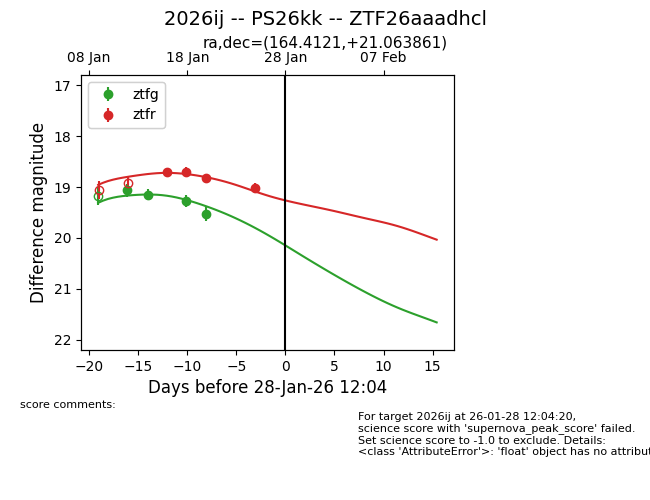
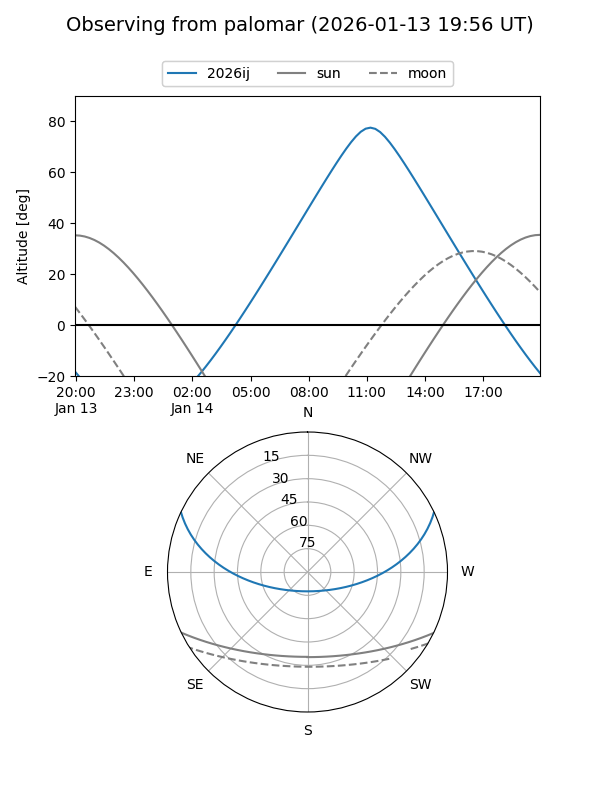
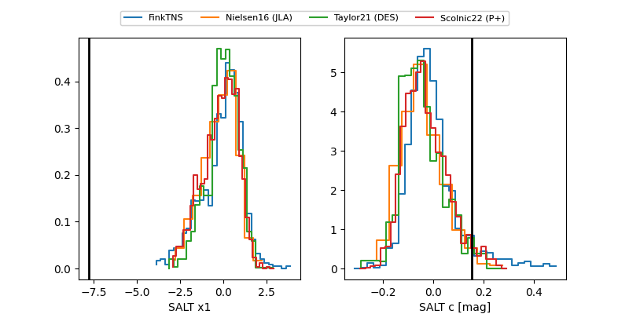

2026ij
Target 2026ij at 2026-01-25 05:01
Aliases and brokers:
FINK: link
Lasair: link
ALeRCE: link
TNS: link
YSE: link
alt names
ZTF26aaadhcl (ztf,fink_ztf)
2026ij (tns,yse)
PS26kk (panstarrs)
Coordinates:
equatorial (ra, dec) = 164.4121,+21.06386
equatorial (HMS+DMS) = 10:57:38.90,+21:03:49.90
galactic (l, b) = (219.8921,+63.39596)
Flags:
Photometry:
last ztfg=19.52, ztfr=18.82
4 ztfg, 3 ztfr detections
Lightcurve

Visibility


Additional plots
